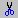
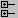

Button |
Name |
Shortcuts |
Description |
|---|---|---|---|
New File |
Menu: |
Opens a new Source text file. The icon changes to reflect the default file type set with the Set Default Action menu pick from the dropdown menu. Click and hold the button to open a dropdown menu with the following options:
|
|
Open |
Menu: |
Opens the Open File dialog |
|
Save |
Menu: |
Saves the contents of the active window or Saves the current wave window display and signal preferences to a DO file script. |
|
Reload |
Command: Dataset Restart Menu: |
Reload the current dataset. |
|
Menu: |
Opens the Print dialog box. |
||
 |
Cut |
Menu: Edit > Cut Hotkey: Ctrl+x |
|
Copy |
Menu: Hotkey: Ctrl+c |
||
Paste |
Menu: Hotkey: Ctrl+v |
||
Undo |
Menu: Hotkey: Ctrl+z |
||
Redo |
Menu: Hotkey: Ctrl+y |
||
Add Selected to Window |
Menu: Hotkey: Ctrl+w |
Clicking adds selected objects to the Wave window. Refer to Add Selected to Window Button for more information about the dropdown menu selections. 1
|
|
Find |
Menu: Hotkey: Ctrl+f (Windows) or Ctrl+s (UNIX) |
Opens the Find dialog box. |
|
 |
Collapse All |
Menu: |
1. You can set the default insertion location in the Wave window from menus and hotkeys with the PrefWave(InsertMode) preference variable.
This button is available when you have selected an object in any of the following windows: Dataflow, List, Locals, Memory, Objects, Process, Schematic, Structure, Watch, and Wave windows. Using a single click, the objects are added to the Wave window. However, if you click-and-hold the button you can access additional options via a dropdown menu.
Add to Wave (Anchor Location) — Adds selected signals above the Insertion Point Bar in the Pathname Pane by default.
Add to Wave (Append Point) — Adds selected signals below the insertion pointer in the Pathname Pane.
Add to Wave (End) — Adds selected signals after the last signal in the Wave Window.
Add to Wave (Top) — Adds selected signals above the first signal in the Wave window.
Add to List — Adds selected objects to the List Window.
Add to Dataflow — Adds selected objects to the Dataflow Window.
Add to Schematic — Adds selected objects to the Schematic Window.
Add to Watch — Adds selected objects to the Watch Window.
Set Default Action — Selecting one of the items from the dropdown menu sets that item as the default action when you click the Add Selected to Window button. The title of the selection is shown in bold type in the Add Selected to Window dropdown menu and two asterisks ( **) are placed after the title to indicate the current default action. For example, Add to Wave (Anchor Location) is the default action in Figure 2.
You can change the default.